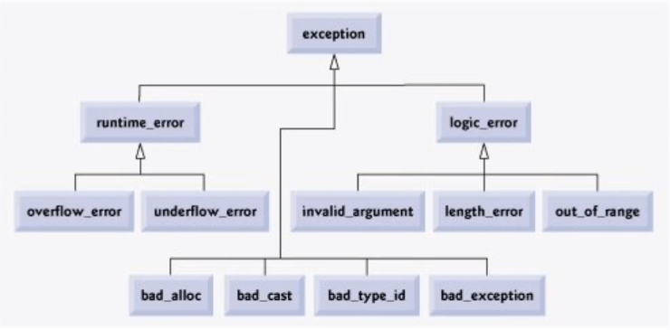

基础
- 通过关键字try/catch/throw引入异常处理机制
void f1() { int x; double y; // y先被销毁，x后被销毁 throw 1; // 此处抛出异常 std::cout << "1" << std::endl; } int f2() { int x; double y; // f1函数中的局部对象被销毁后，开始销毁f2中的局部对象 try { f1(); } catch(double) { // f1抛出的异常不会在这里被捕获，int和double类型不匹配 std::cout << "exception catched 2: " << e << std::endl; } std::cout << "other logic in f2" << std::endl; // 不会执行 } int f3() { try { f2(); } catch(int e) { std::cout << "exception catched 3: " << e << std::endl; } std::cout << "other logic in f3" << std::endl; // 会执行 } int main() { try { f3(); } catch(int) { // 异常已经被处理了，这里不会捕获到异常 std::cout << "exception catched 2!" << std::endl; } catch(double) { // ... } } - 异常触发时的系统行为——栈展开
- 上面代码中的f1抛出异常后，会一层一层往上一个栈帧找catch匹配代码，找不到就抛弃对应栈帧
- 抛出异常后续的代码不会被执行
- 局部对象会按照构造相反的顺序自动销毁
- 系统尝试匹配相应的catch代码段
- 如果匹配则执行其中的逻辑，之后执行catch后续的代码
- 如果不匹配则继续进行栈展开，直到“跳出”main函数，触发terminate结束运行
- 异常对象
- 系统会使用抛出的异常拷贝初始化一个临时对象，称为异常对象
- 异常对象会在栈展开过程中被保留，并最终传递给匹配的catch语句
try/catch语句块
- 一个try语句块后面可以跟一个到多个catch语句块
try { f3(); } catch(int) { // ... } catch(double) { // ... } - 每个catch语句块用于匹配一种类型的异常对象
- catch语句块的匹配按照从上到下进行
// demo 1 void f0() { throw 1; } void f1() { try { f0(); } catch(double) { std::cout << "double" << std::endl; } catch(int) { std::cout << "int" << std::endl; // 会被该catch捕获 } } // demo 2 struct Base {}; struct Derive : Base {}; void f2() { throw Derive{}; } void f3() { try { f2(); } catch(Base& e) { // 异常会被该catch捕获，系统会使用Derive尝试初始化Base类型的e，发现可以初始化，就被捕获了 // 只有派生类->基类、数组->指针、函数->指针可以被匹配，int->double这种不行 std::cout << "base" << std::endl; } catch(Derive& e) { std::cout << "derive" << std::endl; } } - 使用catch(…)匹配任意异常，通常放在多个catch语句块的最后，兜底
- 可以在catch中调用throw抛出相同类型的异常
void f0() { throw Str{}; } void f1() { try { f0(); } catch(...) { throw; // 把捕获到的异常继续向下一层栈帧抛出 } } int main() { try { f1(); } catch(Str& e) { // 捕获到最初由f0抛出的异常 } }
一个异常未处理完成(未被捕获)时抛出新的异常会导致程序崩溃
- 不要在析构函数或者operator delete函数重载版本中抛出异常
- 通常来说，catch所接收的异常类型为引用类型
- 如果不加&，就是用的拷贝初始化，而拷贝初始化过程可以抛出异常，所以存在程序崩溃风险
异常与构造&析构函数
- 使用function-try-block来保护初始化逻辑
struct Str { Str() { throw 100; } }; class Cla { public: Cla() try : mem() { // 这里的": mem()"可以删掉，编译器会隐式初始化mem，不需要用户显示指明 // init logic } catch(int) { std::cout << "exception catched in Cla::Cla" << std::endl; // 编译器会在这里隐式地加一句"throw;" } int xxx; private: Str mem; }; int main() { try { Cla cla; cla.xxx; } catch(int) { // 下面这一行也会执行，因为C++规定，如果是在构造函数内捕获的异常，编译器会隐式地在catch语句块最后加上"throw;"命令 // 这样做的原因是: // 如果不继续向外吐出捕获，程序就会执行到上面的"cla.xxx;"指令，由于cla的初始化并没有成功，执行这条指令的行为是未定义的。 std::cout << "exception catched in main" << std::endl; } } - function-try-block也支持一般函数
void fun() try { throw 123; } catch(...) { } - 在构造函数中抛出异常时，已经构造的成员会被销毁，但析构函数不会被调用
- 构造函数没执行完，有些变量还没初始化，直接调用析构函数就存在未定义行为了
- 对于已经构造出来的变量，如果需要手动清理的话，应该在构造函数的catch语句块中进行销毁处理
描述函数是否会抛出异常
- 如果函数不会抛出异常，则应表明，为系统提供更多的优化空间
- C++98的方式：
- throw()：不会抛出异常
- throw(int, char)：可能会抛出异常
- C++11后的改进：
- noexcept：不会抛出异常
- noexcept(false)：可能会抛出异常
- C++98的方式：
- noexcept
- 限定符：接受false/true表示是否会抛出异常
- 操作符：接受一个表达式，根据表达式是否可能抛出异常返回false/true
void fun() noexcept(false) {} void fun1() noexcept(noexcept(fun())) { fun(); } int main() { std::cout << noexcept(fun()) << std::endl; // 0 } - 在声明了noexcept的函数中抛出异常会导致terminate被调用，程序终止，这里的异常无法在外部被捕获
- 不作为函数重载依据，但函数指针、虚拟函数重写时要保持形式兼容
void fun() {} int main() { void (*ptr)() noexcept = fun; // 报错，fun可能会抛出异常，这里的函数指针明确了不能抛出异常，冲突了 (*ptr)(); }
标准异常
异常类型

- exception:异常
- runtime_error: 运行期异常
- overflow_error
- underflow_error
- logic_error: 逻辑异常
- invalid_argument
- length_error
- out_of_range
- bad_alloc
- bad_cast
- bad_type_id
- bad_exception
- runtime_error: 运行期异常
尽量使用C++提供的标准异常
#include <stdexcept>
void fun() {
// throw 123;
throw std::runtime_error("Invalid Input!");
}
int main() {
try {
fun();
} catch (const std::runtime_error& e) {
std::cout << e.what() << "\n"; // what是exception（基类）的虚函数
} catch (const std::bad_alloc& e) {
// 如果在这里捕获到异常，意味着发生了内存分配失败的问题
}
// 之所以标准定义了这么多种类的异常，就是让你在写代码的时候一眼就可以看出来异常类型和对应的处理逻辑
// 你也可以自己定义异常
}
正确对待异常
- 不要滥用：异常的成本非常高
- 异常是用于处理程序不应该发生的逻辑，正常的跳转不要用
- 不要不用：对真正的异常场景，异常处理是相对高效、简洁的处理方式
- 编写异常安全的代码
- 不安全的例子
void fun() { int* ptr = new int[3]; throw std::runtime_error("Invalid Input!"); // 栈展开了，ptr被销毁，但指向的内存没有被释放，泄露了 delete []ptr; } - 需要注意的点：
- 避免裸的资源分配（如上代码）
- 内存：使用智能指针
- 文件：使用C++提供的fstream
- 接口设计
- stack的pop只返回void，top返回的是内容，这样设计就是为了异常安全
- 避免裸的资源分配（如上代码）
- 不安全的例子